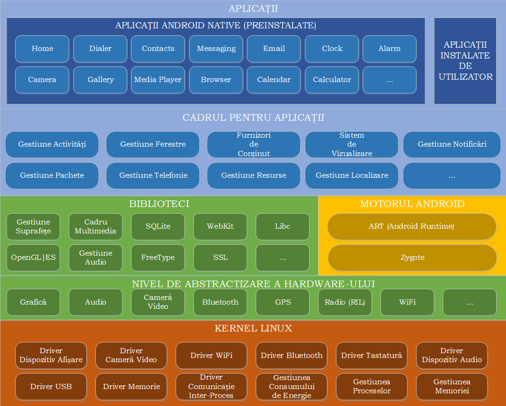

Arhitectura Android
Arhitectura sistemului de operare Android cuprinde cinci secțiuni grupate pe patru niveluri:

- Kernelul Linux (cu unele modificări) conține driver-ele pentru diferitele componente hardware (ecran, cameră foto, tastatură, antenă WiFi, memorie flash, dispozitive audio), fiind responsabil cu gestiunea proceselor, memoriei, perifericelor (audio/video, GPS, WiFi), dispozitivelor de intrare/ieșire, rețelei și a consumului de energie; de asemenea, au fost implementate și unele îmbunătățiri:
- Binder, sistemul de comunicație inter-proces, a fost adaptat, întrucât reprezintă mediul de comunicație principal dintre aplicații și sistemul de operare, inclusiv funcțiile (serviciile) dispozitivului mobil; expunerea sa este realizată prin intermediul AIDL (Android Interface Definition Language) prin care pot fi manipulate obiecte transformate în primitive utilizate la comunicația propriu-zisă dintre aplicații și sistemul de operare;
- Logger, sistemul de jurnalizare, este esențial în cazul în care trebuie realizată depanarea aplicațiilor, în special pentru a detecta anumite situații particulare (informații cu privire la rețea, senzori); acesta este capabil să agrege datele provenite atât de la aplicația propriu-zisă cât și de la sistemul de operare, datele fiind disponibile prin intermediul unor utilitare specializate;
- sistemul prin intermediul căruia se previne transferul sistemului de operare într-o stare de latență (wake locks), în care consumul de energie este redus, întrucât se blochează execuția oricărei aplicații; utilizarea unui astfel de mecanism trebuie realizată cu precauție, întrucât poate determina epuizarea bateriei;
- sistemul de alarme oferă posibilitatea ca anumite sarcini să fie planificate la anumite momente de timp, putând fi executate, chiar dacă sistemul de operare se găsește într-o stare de latență;
- Viking Killer este un mecanism prin care sistemul de operare revendică memoria utilizată, atunci când nivelul acesteia atinge un anumit prag (aplicațiile Android care au fost rulate anterior sunt de regulă stocate în memorie pentru a se putea comuta rapid între ele, de vreme ce încărcarea în memorie este o operație costisitoare);
- YAFFS2 (Yet Another Flash File System) este un sistem de fișiere adecvat pentru cipuri flash bazate pe porți NAND; platforma Android este stocată pe mai multe partiții, ceea ce îi conferă flexibilitate la actualizări, împiedicând modificarea sa în timpul rulării (/boot - conține secvența de pornire, /system - stochează fișierele de sistem și aplicațiile încorporate, /recovery - deține o imagine din care se poate restaura sistemul de operare, /data - include aplicațiile instalate și datele aferente acestora, /cache - utilizată pentru fișiere temporare, folosind memoria RAM, pentru acces rapid).
- Bibliotecile (user-space) conțin codul care oferă principalele funcționalități a sistemului de operare Android, făcând legătura între kernel și aplicații. Sunt incluse aici motorul open-source pentru navigare WebKit, biblioteca FreeType pentru suportul seturilor de caractere, baza de date SQLite utilizată atât ca spațiu de stocare cât și pentru partajarea datelor specifice aplicațiilor, biblioteca libc (Bionic), biblioteca de sistem C bazată pe BSD și optimizată pentru dispozitive mobile bazate pe Linux, biblioteci pentru redarea și înregistrarea de conținut audio/video (bazate pe OpenCORE de la PacketVideo), biblioteci SSL pentru asigurarea securității pe Internet și Surface Manager, bibliotecă pentru controlul accesului la sistemul de afișare care suportă 2D și 3D. Aceste biblioteci nu sunt expuse prin API, reprezentând detalii de implementare Android.
- Motorul Android rulează serviciile de platformă precum și aplicațiile care le utilizează, fiind reprezentat de:
- ART (Android Runtime) este mașina virtuală Java care a fost implementată începând cu versiunea 5.0, folosind un tip de compilare AOH (Ahead of Time), în care bytecode-ul este transpus în cod mașină la momentul instalării, astfel încât acesta este executat direct de mediul dispozitivului mobil; compatibilitatea cu versiuni anterioare (care folosesc mașina virtuală Dalvik, ce se bazează pe un compilator JIT - Just in Time) este asigurată prin transformarea pachetelor în format .dex (Dalvik Executable) la momentul compilării, urmând ca translatarea în format .oat să se realizeze la momentul instalării; fiecare aplicație Android rulează în procesul propriu, într-o instanță a mașinii virtuale ART, izolând astfel codul și datele sale prin intermediul unor permisiuni, care se aplică inclusiv la comunicația prin intermediul interfețelor de comunicare oferite de sistemul de operare Android;
- Zygote este procesul care gestionează toate aplicațiile, fiind lansat în
execuție odată cu sistemul de operare:
- inițial, creează o instanță a mașinii virtuale Java pentru sistemul de operare Android, în contextul căreia plasează serviciile de bază: gestiunea energiei, telefonie, furnizori de conținut, gestiunea pachetelor, serviciul de localizare, serviciul de notificări;
- atunci când este necesar să lanseze în execuție o anumită aplicație, se clonează, partajând astfel componentele sistemului de operare Android, astfel încât să se asigure performanța (timp de execuție) și eficiența (memorie folosită), de vreme ce fiecare aplicație trebuie rulată în propria sa instanță a mașinii virtuale Java;
- Cadrul pentru Aplicații expune diferitele funcționalități ale sistemului de operare Android către programatori, astfel încât aceștia să le poată utiliza în aplicațiile lor.
- La nivelul de aplicații se regăsesc atât produsele împreună cu care este livrat dispozitivul mobil (Browser, Calculator, Camera, Contacts, Clock, FM Radio, Launcher, Music Player, Phone, S Note, S Planner, Video Player, Voice Recorder), cât și produsele instalate de pe Play Store sau cele dezvoltate de programatori.